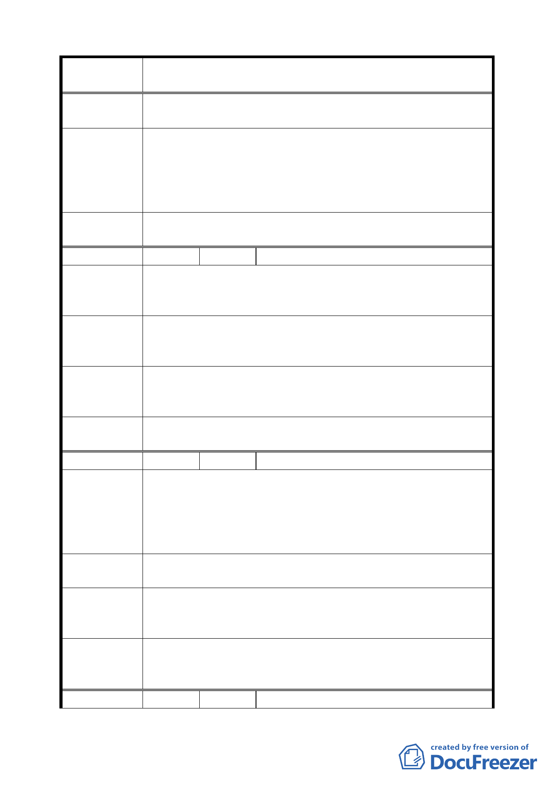

案 名 臺北市文山區都市計畫通盤檢討（細部計畫）案
撐板。
五、 為了里民生命財產安全，不能變更為 4 米人行步道。
專案小組
審查結論
（94.7.25） 同編號 10。
（94.10.17）
（94.11.24）
委員會議
決議
同編號 10。
編 號 １２ 陳情人 王林淑惠（09430074500）
陳情理由
（木柵）
建議位置：華興段 292、293 地號（和興路 11 弄 26 巷 14 號）。
建議理由：
懇請重新評估由日本時代之都市計畫 8 米道路。
地籍 292、293 為四棟連結之二樓建築，在和興路之巷道用 8
建 議 辦 法 米道路，恐將影響四棟建築之安全，是否可將彎道劃為直線
或縮小寬度。
專案小組
審 查 結 論 本 8 公尺道路用地，仍有劃設需求，故維持原計畫。
（94.7.4）
委員會議
決議
依專案小組審查結論辦理。
編 號 １３ 陳情人 盛仲達（09430082800）
陳情住址：辛亥路七段 60 巷 2 號 4 樓。
陳情理由
（木柵）
建議理由：
建議將辛亥路七段（自木新陸橋頭到景美橋）擋水牆改建為
沿溪步道，使與木新陸橋南之步道系統連接以構成完整之步
道系統，藉以改善景觀。
建議辦法
拆除 RC 檔水牆，改建為土堤步道，以改善辛亥路七段都市
景觀。
專案小組
審 查 結 論 關於本陳情意見，移請工務局養護工程處協調處理。
（94.7.4）
委 員 會 議 依專案小組審查結論，修正為「移請工務局水利工程處協調
決 議 處理」。
編 號 １４ 陳情人 馬麗元（09430082800）
三四